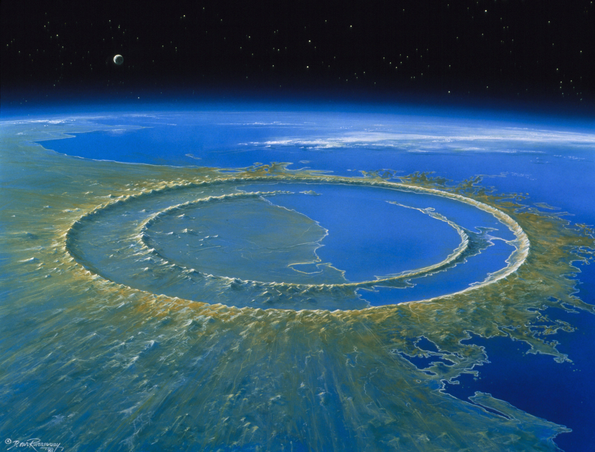

The Chicxulub crater is an impact crater buried underneath the Yucatán Peninsula in Mexico. Its center is offshore near the communities of Chicxulub Puerto and Chicxulub Pueblo, after which the crater is named. It was formed when a large asteroid, about 10 kilometers (6.2 miles) in diameter, struck the Earth. The crater is estimated to be 180 kilometers (110 miles) in diameter and 20 kilometers (12 miles) in depth. It is one of the largest confirmed impact structures on Earth, and the only one whose peak ring is intact and directly accessible for scientific research.

History
In the late 1970s, geologist Walter Alvarez and his father, Nobel Prize–winning scientist Luis Walter Alvarez, put forth their theory that the Cretaceous–Paleogene extinction was caused by an impact event.[3][4] The main evidence of such an impact was contained in a thin layer of clay present in the K–Pg boundary in Gubbio, Italy. The Alvarezes and colleagues reported that it contained an abnormally high concentration of iridium, a chemical element rare on earth but common in asteroids.[3][5][6] Iridium levels in this layer were as much as 160 times above the background level.[7] It was hypothesized that the iridium was spread into the atmosphere when the impactor was vaporized and settled across the Earth's surface among other material thrown up by the impact, producing the layer of iridium-enriched clay.[8] At the time, consensus was not settled on what caused the Cretaceous–Paleogene extinction and the boundary layer, with theories including a nearby supernova, climate change, or a geomagnetic reversal.[7]: 1095 The Alvarezes' impact hypothesis was rejected by many paleontologists, who believed that the lack of fossils found close to the K-Pg boundary—the "three-meter problem"—suggested a more gradual die-off of fossil species.
There are many videos on what the Chixulub Impactor is.